Thank you
At first we would like to say thank you for choosing Master Slider WordPress plugin. In this documentation you will find everything you need to use Master Slider WordPress.
If you have any questions which are not covered in this documentation, please take a look at support section.
About the Master Slider WordPress
Master Slider WordPress is a premium high quality designed image and content slider for WordPress, with super smooth hardware accelerated transitions. It supports touch navigation with pure swipe gesture that you have never experienced before. It’s a truly responsive and device friendly slider which works perfect in all major devices. Master Slider is an awesome layer slider as well, with the ability of adding any HTML contents (texts, images, …) in layers. It is easy to use, plus there are ready to use templates available for you. You almost have everything in Master slider which is the most complete among the best, hotspots, thumbnails, variety of effects, Video support and much more.
Master Slider developer documentation
There is another version of Master Slider documentation specially for developers which you can find Developer Documentation here.
Installing by WP plugin installer
- Extract the zip file which you've downloaded from CodeCanyon.
- Navigate to
Plugins > Add New page in your WordPress admin.
- Click on the
Upload button on the top.
- Click on
Choose File and choose "masterslider-installable.zip" file from extracted zip file. then hit the Install Now button.
- WordPress may ask you to enter your FTP details. After entering hit the
Proceed.
- Now you should see "Master Slider WP" in plugins list. Click on the
Activate Plugin to activate Master Slider WP.
Also WordPress codex contains instructions on how to do this here.
Note In this method the server that hosts your website should allow upload limits greater than 6 MB. Most hosting providers have only up to 2MB file upload limit.
In this case you need to upload the theme by FTP or contact your host provider to increase upload limit.
Installing by FTP
First, you need a tool for uploading plugin files to your site, you can use filemanager from cPanel or any FTP clients. Some good FTP clients :
- Extract the zip file which you've downloaded from CodeCanyon.
- Open extracted folder and extract "masterslider-installable.zip" file, after extract you should see "masterslider" folder.
- Connect to you server by FTP application then navigate to
/wp-content/plugins/.
- Upload the "masterslider" folder which extracted.
- Login to your WordPress admin area and navigate to the
Plugins page, then click the Activate below Master Slider WP.
Server Minimum Requirements
- WordPress 3.6 or greater
- PHP version 5.2.4 or greater
- MySQL version 5.0 or greater
Auto update
Activate the auto update simply by going to Master Slider settings and entering Your Envato Username, Your Secret API Key and Master Slider Purchase Code on License Activation tab.
Manual update
- Go to your CodeCanyon account and in download page, re-download the plugin ( updates are free of charge )
- Remove `/wp-content/plugins/masterslider` directory on your website using FTP
- Extract the download package file and find `masterslider-installable.zip`
- Extract `masterslider-installable.zip` directory to your computer and upload it to `/wp-content/plugins/` directory using a FTP
- Activate the plugin in the Plugins page
Attention: If you 'delete' Masterslider in plugins page by clicking on 'delete' button the uninstall proccess will trigger and it will erase all sliders and data related to Masterslider. Please pay attention and always update the plugin by two above methods.
Creating New Slider
- Login to your wordpress admin panel and click on
MasterSlider link in admin sidebar menu.
- In Masterslider page click on
Create New Slider button.
- Now a popup window will be open as shown in screenshot.
- Select slider type and press
CREATE button.
- Your request will be proceed and you will be redirected to MasterSlider's panel page.
General Settings
- Slider name
- Specifies a name for your slider. It only used in admin area.
- Slider width
- Base width of slider in pixels, slider will resize layers and other elements under this value.
- Slider height
- Base height of slider in pixels.
Note Automatically crop and resize slider images based on above size if it is on.
- Slider sizing method
- The sizing method of slider, with this you can make slider
fullscreen or fullwidth even if it does not supported in your theme, it also supports boxed and visible nearby slides layouts.
- Auto-height Slider
- Whether the slider adapts its height to each slide height.
- Slider wrapper width
- It will set the wrapper width of slider (slider parent) if it leaves empty slider will set it automatically (Slider uses this to align slider controls).
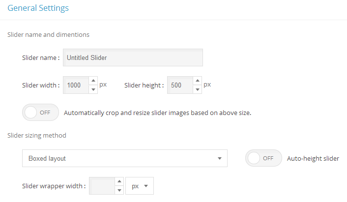
Slider Template and Transition
- Template
- Here by clicking on
Choose template you can specify a template for your slider.
- Note Selecting template may overwrite some slider options and controls. If you want to have full control on options, select
Custom Template.
- Transition
- Specifies the transition of changing slides in slider.
- Transition speed
- The speed amount of changing transition. Higher 50 values are not recommended.
- Direction
- Specifies slide changing direction, It may not supported by some templates.
- Slide space
- The spacing value between slides in pixels.
Slider Navigation and Preloading
- Slide show
- Enables the autoplay slideshow.
- Loop navigation
- Enables the continuous sliding mode.
- Pause at the end slide
- Whether the slider pauses slideshow when it reaches to last slide.
- Pause on hover
- Whether the slider temporary pause slideshow on mouse cursor moves over slider.
- Random order
- Whether using random slide ordering.
- Hide layers before changing slide
- Triggers hide transition of all layers just before changing slide. Only happens in slideshow slider.
- Show layers before slide transition complete
- Triggers show transition of next slide before slide transition complete.
- Start with slide
- Specifies the fist slide in slider.
Slider deep linking
- Deeplink name
- A unique name for the slider which will be used in browser address bar you can enter your own name otherwise slider generates a unique one.
- Type of permalink
- Specifies the type of displaying slider deeplinking permalink in the address bar.
Parallax mode
- Move while sliding/swiping
- It moves the layers while slider is sliding or swiping.
- Follow mouse
- It moves the layers while mouse is moving.
- Follow mouse over X-axis
- It moves the layers only on X-axis while mouse is moving (horizontally moves).
- Follow mouse over Y-axis
- It moves the layers only on Y-axis while mouse is moving (vertically moves).
- Disable
- It disable the parallax effect.
Slider parallax move while scrolling
- Layers parallax depth percentage
- The Intensity of parallax effect, higher values makes the layer more sensitive. Negative values are allowed.
- Background parallax depth percentage
- The Intensity of parallax effect of slide background, higher values makes the background more sensitive. Negative values are allowed.
- Touch swipe navigation
- Whether the drag/swipe navigation is enabled.
- Mouse swipe navigation
- Whether the user can use mouse drag navigation.
- Use grab cursor
- Whether the slider uses grab mouse cursor while swiping with mouse.
- Mouse wheel
- Enables mouse scroll wheel navigation.
- Slide preloading
- Here you can specify that how slider loads images, it supports three different methods:
Load slides in sequence, Load all slides before init and Load nearby slides which takes the number of current slide's nearby slides that should loads at a same time.

Slider Appearance
- Skin
- Here you can specify the skin of your slider.
- you can take a look at all skins here..
- Align center slider controls
- Whether the slider aligns UI controls to center. This option is only effective in full width mode.
- Background image
- Here you can choose a background image for the slider.
- Background color
- Specifies the background color of slider
- Class name
- Here you can add custom class names to the slider main element. Multiple class names must be separated by white space.
- Inline style
- Here you can add custom CSS style to slider main element. For example
border:solid 1px red;
Slides
Here you can see already added slides to the slider, you can add a new slide to slider by clicking on Add Slide
Also you can change the sort of slides by drag and drop each one in this list.
- Remove slide
- You can remove the slide by clicking on
 icon.
icon.
- Duplicate slide
- For creating a duplicate from a slide you can click on icon.
- Show or hide slide
- You can show or hide each slide by clicking on icon. Slider doesn't show hidden slides in front end.
Slide background and thumbnail
- Background
- Specifies current slide background.
- Fillmode
- Specifies the slide background scaling method.
- Thumbnail
- Here you can add a thumbnail for the slide. Please make sure that you have added
Thumblist control to the slider or the selected template supports thumbs.
Slide video background
- Video background paths
- Specifies the slide background video.You can use major video types like MP4, Ogg and webm.
- Video background fill mode
- You can choose the fill mode of the video size.
- Loop
- Turn on/off background video loop.
- Mute
- turn on/off background video sound.
- Pause video on slide changed
- It pauses video when slide change and continues playing when it goes back to slide video.
Slide video and link
Here you can add Youtube or Vimeo video as a video slide and also you can make link each slide of your slider.
- URL
- You can set a URL when user click on this slide it links to URL.
- Video embed src
- You can add Youtube and Vimeo src to create an slide for that video.
- Note To find YouTube/Viemo Embed URL you can Open the video in YouTube/Vimeo, play video and right-click on it, select "Copy embed code" then paste the embed code in a text editor, now you can see video embed URL in embed code which specified as iframe src.
Slide misc
Here you can add custom CSS class or id to each slide and also add alt attribute to slide background image.
- Class name
- you can add a CSS class to slide.
- CSS id
- you can add a CSS id to slide.
- Background color
- It will be used to add color to slide background.
- Alt text
- you can add an alt text attribute to the image in your background of slide.
- Color overlay
- You can add color overlay to the slide.
- Pattern overlay
- You can add pattern overlay to the slide.
Working with Layers
There are 5 types of layer in Master Slider
- Image
- You can add images in this type of layers.
- Text
- You can add texts in this type of layers.
- Video
- You can add Youtube and Vimeo videos in this type of layers.
- Button
- You can add clickable button over slider and link it or bind custom actions to it.
- Hotspot
- You can add hotspots in this type of layers to show the related tooltip while mouse is over that hotspot, tooltip accepts html content as well as images in any sizes.
Adding new layers
To add layer in slide first you need to choose the layer type from the dropdown menu then press "+" button, the new layer will add in timeline and you can select it by clicking on its name.
Adding content to image layers
- Select image
- You can select the image to put in image layer.
- Alt text
- You can add text for alt attribute to have a better SEO.
- Link layer
- You can set a URL when user click on this image layer it links to URL.
- Layer actions
- You can bind action the layer. Actions runs by clicking on layer by user.
Adding content to text layers
- Width
- You can set the width of text layer in pixel.
- Layer actions
- You can bind action the layer. Actions runs by clicking on layer by user.
Note You need to enter your text on text editor.
Adding content to video layers
- Src
- You can set Youtube or Vimeo src here.
- Note To find YouTube/Viemo Embed URL you can Open the video in YouTube/Vimeo, play video and right-click on it, select "Copy embed code" then paste the embed code in a text editor, now you can see video embed URL in embed code which specified as iframe src.
- Width
- You can set the width of video layer in pixel.
- Height
- You can set the height of video layer in pixel.
- Select image
- You can select the image to put as video cover. It shows when video hasn't played yet.
- Alt text
- You can add text for alt attribute to have a better SEO.
Using Button layers
- Label
- Specifies the label of button
- Link layer
- You can set a URL when user click on this image layer it links to URL.
- Layer actions
- You can bind action the layer. Actions runs by clicking on layer by user.
- Note You can choose button style from preset button slides or create a new one by clicking on "New/Edit Button.." in Button Editor.
Adding content to hotspot layers
- Tooltip align
- You can select the place of tooltip on hotspot layer here.
- Tooltip max width
- You can set the max width of Tooltip here.
- Stay tooltip on mouse over it
- tooltip does not disappear when mouse is over it.
- Note Use text editor to add the content of hotspot layer such as image, text and etc.
- Link layer
- You can set a URL when user click on this image layer it links to URL.
- Layer actions
- You can bind action the layer. Actions runs by clicking on layer by user.
Set layer position on slide
You can select each layer by clicking on that then you can set the place for layer simply by drag and drop.You can also use keyboard arrow keys for changing layer place to have a better control over it or use "shift" + "arrow keys" to have a better speed.
You can change the depth of layers simply by dragging layer name in list of layers in timeline.
- Align to stage
- Use them to align layer to top, left, bottom, right, middle and center of slide.
- Snapping
- If you turn it on, in short distances the layer snaps to near object such as other layers, borders of slide and etc.
- Zoom
- It zooms the stage to make positioning easier.
- Note Zoom is only to make positioning easier and doesn't have any effect on output.
Adding transition to layer
- Parallax effect level
- The Intensity of parallax effect, higher values makes the layer more sensitive. Negative values are allowed.
- Transition effect
- you can select transition effect for layer in/out or create a new transition on Transition Editor for your layer.
- Duration
- You can set the transition time for layer here, you can set it on timeline too, please take a look at Working with timeline for more information.
- Delay
- You can set the delay time for transition layer here, you can set it on timeline too, please take a look at Working with timeline for more information.
- Enable transition out
- You can enable/disable transition out for layer here.
- Waiting
- You can set the duration time between transition in and out for layer.
Styling layer
- Layer position origin
- Choose the origin of layer from its 9 place.
- OffsetX
- You can set the X position of layer.
- OffsetY
- You can set the Y position of layer.
- Select style for your layer
- You can select style for layer or create a new style on Style Editor for your layer.
- Resizable layer
- If you turn it on this layer size changes by changing the window size.
- Hide layer under width
- You can set a minimum width for slider and if it goes less than that width this layer will be invisible.
Layer misc
- CSS class name
- you can add a CSS class to layer.
- CSS id
- you can add a CSS id to layer.
- Title attribute
- You can add title attribute for better SEO.
- Rel attribute
- You can add title attribute for better SEO.
Working with Timeline
You can manage all the layers in timeline on left side you can see all the layers of slide which
- You can rename each layer by double clicking on its name.
- You can change layers order by drag and drop.
- You can remove layer by clicking on icon in front of each layer.
- You can duplicate each layer by clicking on icon in front of each layer.
- You can show or hide each layer by clicking on button below icon on layer row. It doesn't have any effect on front end.
- You can lock layers for keep them safe from any changes by clicking on button below icon in layer row.
- You can select only one layer to be visible to have a better view while working on layer by clicking on button below icon in layer row. It doesn't have any effect on front end.
You can understand the layer type by seeing the icon before its name.
- All the image layers represent by icon.
- All the text layers represent by icon.
- All the video layers represent by icon.
- All the hotspot layers represent by icon.
In front of each layer there is a timebar to give you access to time information.
- Gray color represent for delay time for layer.
- Blue color represent for transition in time for layer.
- Yellow color represent for waiting time for layer.
- Red color represent for transition out time for layer.
You can see the time info of each color by overing your mouse on that timebar, also you can change the time of each color by dragging that timebar.
You can set duration of showing slide in autoplay mode.
Working with Timeline in preview mode.
In preview mode timeline starts playing and you can see the transitions of each layer on slide, you need to click on "Preview slide" to enter to preview mode.
Note Removing or editing layers is disabled in preview mode.
In preview mode you can have a powerful control over timeline playing by using indicator . You can use indicator to pause this timeline whenever you want or use it for fast forward/backward on timeline by dragging indicator. You can exit from preview mode by clicking on "exit preview".
Note You can pause and resume timeline by pressing the button on the left of "Exit preview".
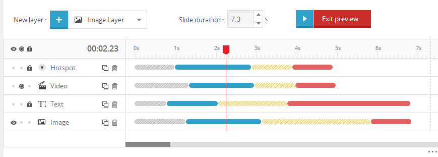
Working with Style Editor
You can use style editor to style layers, you can create a new style or use preset styles, also save the custom style as a preset for using it in other slider and slides.
There is a lot of options for you to style your layer and apply them With the option of seeing changes in preview.
There is an option to use 600+ Google font, adding custom CSS from "Custom style" tab and a lot more.
Note If you remove a style from preset list it will affect on other sliders that use this specific preset style as well and their style would be removed.
Note If you have a single line text we recommend you to turn off wordwrap.
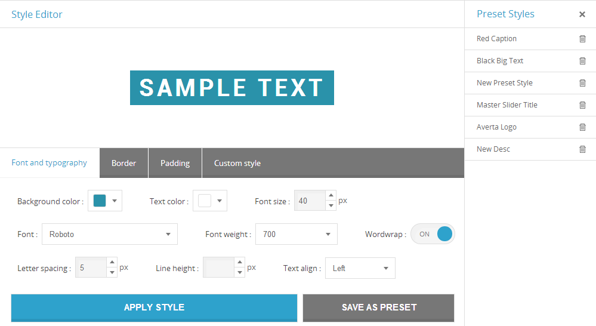
Working with Style Editor
You can use button editor to create or edit buttons style, you can create a new style or use preset styles, also you can save the custom style as a new button for using it in other slider and slides.
There is a lot of options for you to style your button and apply them With the option of seeing changes in preview.
Note If you remove a button from list it will affect on other sliders that use this specific button as well and their style would be removed.
Working with Transition Editor
You can create custom transition and apply or save them as a preset transition for future usage. Also you can see your transition with having control of moving forward/backward.
General transition options
You can create custom transition and apply or save them as a preset transition for future usage.
- Fade
- Whether fade your transition or not.
- Duration
- Specifies the time of transition in second.
- Ease function
- Specifies the ease function for your transition.
- OffsetX
- Specifies the translate over X-axis for the transition in pixel.
- OffsetY
- Specifies the translate over Y-axis for the transition in pixel.
- OffsetZ
- Specifies the translate over Z-axis for the transition in pixel.
Transition rotation
- 2D Rotate
- Specifies clockwise rotation at a given degree.
- Rotate X
- Specifies rotation over X-axis.
- Rotate Y
- Specifies rotation over Y-axis.
- Rotate Z
- Specifies rotation over Z-axis.
Transition scale
- Scale X
- Specifies the Scale of layer's width.
- Scale Y
- Specifies the Scale of layer's height.
- Skew X
- Specifies the Skew of layer along the X-axis.
- Skew Y
- Specifies the Skew of layer along the Y-axis.
Specifying transition origin
- Origin X
- Specifies the position of X-axis for layer in percentage.
- Origin Y
- Specifies the position of Y-axis for layer in percentage.
- Origin Z
- Specifies the position of Z-axis for layer in pixel.
Adding Slider Controls
You can select one type of controller from the dropdown menu and by clicking on  it will add to "Used control" list. You can customize each control type by clicking on that.
it will add to "Used control" list. You can customize each control type by clicking on that.
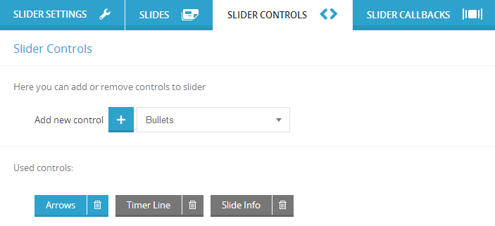
Arrows Control Options
You have the abilities of hiding arrows while mouse is out of slider, showing arrows over videoplayer and hiding arrows in specific size of windows and less than that.
Line Timer Control Options
You have the abilities of hiding line timer while mouse is out of slider, showing line timer over videoplayer and hiding line timer in specific size of windows and less than that.
- Align control
- Specifies the place of line timer.
- Line timer color
- Specifies the color of line timer.
- Line timer width
- Set the width of line timer.
Slide Info Control Options
You have the abilities of hiding slide info while mouse is out of slider, showing slide info over videoplayer and hiding slide info in specific size of windows and less than that. Also you can insert the slide info inside of slider.
- Align control
- Specifies the place of slide info.
- slide info margin
- Specifies the margin for slide info.
- slide info width
- Specifies the width for slide info in pixel.
- slide info height
- Specifies the height for slide info in pixel.
Bullets Control Options
You have the abilities of hiding bullets while mouse is out of slider, showing bullets over videoplayer and hiding bullets in specific size of windows and less than that.
- Align control
- Specifies the place of bullets.
- slide info margin
- Specifies the margin for bullets.
Circle Timer Control Options
You have the abilities of hiding circle timer while mouse is out of slider, showing circle timer over videoplayer and hiding circle timer in specific size of windows and less than that.
- Circle stroke
- Specifies the stroke of circle in pixel.
- Circle radius
- Specifies the radius of circle in pixel.
- Circle color
- Specifies the fill color of circle.
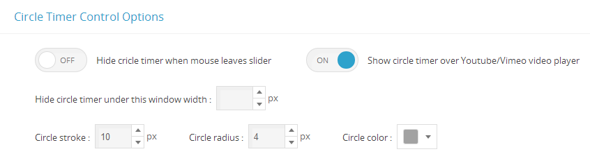
Scrollbar Control Options
You have the abilities of hiding Scrollbar while mouse is out of slider, showing Scrollbar over videoplayer and hiding Scrollbar in specific size of windows and less than that. Also you can insert the Scrollbar inside of slider.
- Scrollbar handle color
- Specifies the color for Scrollbar handle.
- Align control
- Specifies the place of Scrollbar.
- Scrollbar width
- Specifies the width for Scrollbar.
- Scrollbar margin
- Specifies the margin for Scrollbar.
Thumblist/Tabs Control Options
You have the abilities of hiding thumblist/tabs while mouse is out of slider, showing thumblist/tabs over videoplayer and hiding thumblist/tabs in specific size of windows and less than that. Also you can insert the thumblist/tabs inside of slider.
- Thumb background fill mode
- Specifies the background fill mode of thumblist/tabs.
- Align control
- Specifies the place of thumblist/tabs.
- Thumblist/Tabs margin
- Specifies the margin for thumblist/tabs.
- Appearance
- Choose thumblist or tabs.
- Thumblist/Tabs info width
- Specifies the width for thumblist/tabs in pixel.
- Thumblist/Tabs info height
- Specifies the height for thumblist/tabs in pixel.
- Space between thumbs/tabs
- Specifies the the space among thumbs in thumblist mode or tabs in tab mode.
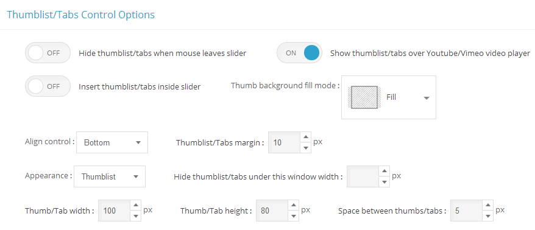
Working with Post Slider
You can create slider from your post simply by creating post slider. It uses the images and texts related to post.
You need to click on "Create New Slider" then from the types select "Post Slider" and click "CREATE".
Configuring Post Settings
Post type
There are two types of post slider (Posts and Pages) which you can choose and the related options to chosen type will be displayed.
- Posts
- It will be used to create slider from WordPress posts
If you select posts:
- Select the
Categories that you want the posts fetch from.
- Select the
Tags that you want the posts fetch from.
Note If you want to select multiple categories/tags you need to hold ctrl(command in OS X) and click on the categories you want.
- Pages
- It will be used to create slider from WordPress pages
- Exclude posts
- Enter the (post/page)'s ID that you don't want to fetch in slider
Note You need to separate the (post/page)'s ID by comma like 53,34,87,25.
- Posts number
- Set the number of (posts/pages) that you want to have in post slider.
- Excerpt length
- Set the excerpt length for your (posts/pages) in post slider.
- Number of first results to skip (offset)
- Set the number of posts that you don't want to have in post slider, for example 3 ignores the first three (posts/pages).
- Link slides to post's page
- Enable the post slider links, when user clicks on th slide it goes to its post page.
Order of slides
In this part you can arrange the order of post slides.
Order by
- Date
- Arrange the post slides based on post published date.
- Menu Order
- Arrange the post slides based on their orders on menu.
- Title
- Arrange the post slides based on their titles.
- ID
- Arrange the post slides based on their ID.
- Random
- Arrange the post slides randomly.
- Comments
- Arrange the post slides based on number of their comments.
- Date Modified
- Arrange the post slides based on post modified date.
- Author
- Arrange the post slides based on post's author name.
Order direction
- Descending
- From A to Z
- Ascending
- From Z to A
Post slide background image option (Grab the image from)
- Auto Select
- It select the featured image if doesn't exist select first image in post
- Featured Image
- It select the featured image
- First Image in Post
- It select the first image in post
- Custom Image
- It gives you the option to select a custom image
- None
- It doesn't use any image in post slides
Text content of Post Slider
You will have a huge control on adding related post content by using Insert dynamic content options. There are 2 Insert dynamic content for Post Slider one of them placed on Layer Content of text Layer as displayed in picture, the other one Slide info
Insert dynamic content
You can simply add text layer on each slide and add the content dynamically by using "Insert dynamic content".
There are a lot of option to help you add any related post information to slide which explains on below table.
| Name |
Description |
Short code |
| The post title |
Add the post title. |
{{title}} |
| The post content |
Add the post content |
{{content}} |
| The post excerpt |
Add the post excerpt, you can set the length of excerpt on "post settings". |
{{excerpt}} |
| The post link |
Add the post link. |
{{permalink}} |
| The author name |
Add the author name. |
{{author}} |
| The unique ID of the post |
Add the unique ID of the post. |
{{post_id}} |
| Post image |
Add the image of post. |
{{image}} |
| Post image source |
Add the image URL. |
{{image-url}} |
| The year of the post |
Add the year of the post. |
{{year}} |
| Numeric Month |
Add the numeric Month. |
{{monthnum}} |
| Month name |
Add the month name. |
{{month}} |
| Day of the month |
Add the day of the month. |
{{daynum}} |
| Weekday name |
Add the weekday name. |
{{day}} |
| Hour:Minutes |
Add the hour:minutes of published post. |
{{time}} |
| The publish date |
Add the date of published post. |
{{date-published}} |
| The last modified date |
Add the date of last modified post. |
{{date-modified}} |
| Number of comments |
Add the number of comments of post. |
{{commentnum}} |
Working with Facebook Slider
You can create slider from Facebook images simply by creating Facebook Slider. You need to click on "Create New Slider" then from the types select "Facebook Slider" and click "CREATE".
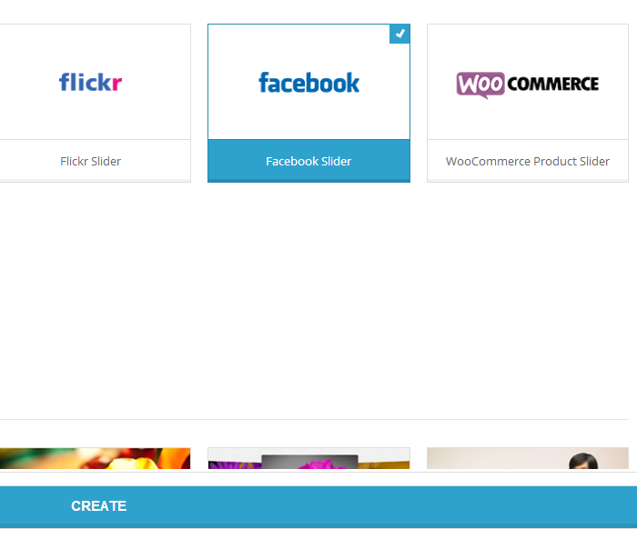
Configuring Facebook Slider setting
There are two options to create Facebook slider, from user public photos and from Photos in an album.
- User public photos
- It will be used to create slider from public images of user.
If you select User public photos:
- Username
- Enter the username of Facebook.
- Photos in an album
- It will be used to create slider from images of Facebook album.
If you select Photos in an album:
- Album id
- Enter the id of Facebook album.
- Number of photos
- The number of images to create Facebook slider.
- Images size
- You can choose the size of images in slider.
- Thumbnails size
- You can choose the size of Thumbnails in slider.
Insert dynamic content
You can simply add text layer on each slide and add the content dynamically by using "Insert dynamic content".
| Name |
Description |
Short code |
| Photo name |
Add the photo name. |
{{name}} |
| Photo owner name |
Add the owner name of photo |
{{owner-name}} |
| Photo link |
Add the post excerpt, you can set the length of excerpt on "post settings". |
{{link}} |
Working with Flickr Slider
You can create slider from Flickr images simply by creating Flickr Slider. You need to click on "Create New Slider" then from the types select "Flickr Slider" and click "CREATE".
Configuring Flickr Slider setting
- API key
- Enter the API key for your Flickr.
There are two options to create Flickr slider, from user public photos and from Photos in a set.
- User public photos
- It will be used to create slider from public images of user.
If you select User public photos:
- User Id
- Enter the user id of Flickr.
- Photos in a set
- It will be used to create slider from images of a Flickr set.
If you select Photos in a set:
- Photoset Id
- Enter the id of Photoset.
- Number of photos
- The number of images to create Flickr slider.
- Images size
- You can choose the size of images in slider.
- Thumbnails size
- You can choose the size of Thumbnails in slider.
Insert dynamic content
You can simply add text layer on each slide and add the content dynamically by using "Insert dynamic content".
| Name |
Description |
Short code |
| Photo name |
Add the photo name. |
{{title}} |
| Photo owner name |
Add the owner name of photo |
{{owner-name}} |
| Date taken |
Add the date that photo was taken. |
{{date-taken}} |
| Photo Description |
Add photo description |
{{description}} |
Working with WooCommerce Product Slider
You can create slider from your products simply by creating WooCommerce Product Slider. You need to click on "Create New Slider" then from the types select "WooCommerce Product Slider" and click "CREATE".
Configuring WooCommerce Product Slider
- Categories
- Select the
Categories that you want the products fetch from.
- Tags
- Select the
Tags that you want the products fetch from.
Note If you want to select multiple categories/tags you need to hold ctrl(command in OS X) and click on the categories you want.
- Only display in-stock products
- It shows only the products available in-stock.
- Only display featured products
- It shows only the featured products.
- Only display on sale products
- It shows only the on sale products.
- Exclude products
- Enter the product's ID that you don't want to fetch in slider.
- products number
- Set the number of products that you want to have in product slider.
- Excerpt length
- Set the excerpt length for your products in product slider.
- Number of first results to skip (offset)
- Set the number of products that you don't want to have in post slider, for example 3 ignores the first three products.
- Link slides to product's page
- Enable the product slider links, when user clicks on th slide it goes to its product page.
Order of slides
In this part you can arrange the order of post slides.
Order by
- Date
- Arrange the product slides based on product published date.
- Menu Order
- Arrange the product slides based on their orders on menu.
- Title
- Arrange the product slides based on their titles.
- ID
- Arrange the product slides based on their ID.
- Random
- Arrange the product slides randomly.
- Comments
- Arrange the product slides based on number of their comments.
- Date Modified
- Arrange the product slides based on product modified date.
- Author
- Arrange the product slides based on product's author name.
- Popularity
- Arrange the product slides based on popularity.
- Average rating
- Arrange the product slides based on average rating.
- Price: low to high
- Arrange the product slides based on their price.
- Price: high to low
- Arrange the product slides based on their price.
Order direction
- Descending
- From A to Z
- Ascending
- From Z to A
product slide background image option (Grab the image from)
- Auto Select
- It select the featured image if doesn't exist select first image in product.
- Featured Image
- It select the featured image.
- First Image in product
- It select the first image in product.
- Custom Image
- It gives you the option to select a custom image.
- None
- It doesn't use any image in product slides.
Insert dynamic content
You can simply add text layer on each slide and add the content dynamically by using "Insert dynamic content".
| Name |
Description |
Short code |
| The post title |
Add the post title. |
{{title}} |
| The post content |
Add the post content |
{{content}} |
| The post excerpt |
Add the post excerpt, you can set the length of excerpt on "post settings". |
{{excerpt}} |
| The post link |
Add the post link. |
{{permalink}} |
| The author name |
Add the author name. |
{{author}} |
| The unique ID of the post |
Add the unique ID of the post. |
{{post_id}} |
| Post image |
Add the image of post. |
{{image}} |
| Post image source |
Add the image URL. |
{{image-url}} |
| The year of the post |
Add the year of the post. |
{{year}} |
| Numeric Month |
Add the numeric Month. |
{{monthnum}} |
| Month name |
Add the month name. |
{{month}} |
| Day of the month |
Add the day of the month. |
{{daynum}} |
| Weekday name |
Add the weekday name. |
{{day}} |
| Hour:Minutes |
Add the hour:minutes of published post. |
{{time}} |
| The publish date |
Add the date of published post. |
{{date-published}} |
| The last modified date |
Add the date of last modified post. |
{{date-modified}} |
| Number of comments |
Add the number of comments of post. |
{{commentnum}} |
| Price |
Add the price of product. |
{{wc_price}} |
| Regular Price |
Add the regular price of product. |
{{wc_regular_price}} |
| Sale Price |
Add the sale price of product |
{{wc_sale_price}} |
| In Stock Status |
Add the sale price of product |
{{wc_stock_status}} |
| Stock Quantity |
Add the quantity of product |
{{wc_stock_quantity}} |
| Weight |
Add the weight of product |
{{wc_weight}} |
| Product Categories |
Add the categories of product |
{{wc_product_cats}} |
| Product Tags |
Add the tags of product |
{{wc_product_tags}} |
| Total Sales |
Add the total sales of product |
{{wc_total_sales}} |
| Average Rating |
Add the average rating of product |
{{wc_average_rating}} |
| Rating Count |
Add the total number of rating |
{{wc_rating_count}} |
Use lightbox in your slider
Note To use Lightbox in Master Slider you need to have lightbox script loaded on your website like PrettyPhoto.
You can add a layer on your slide and under its "Layer Content" tab put {{slide-image-url}} to URL option.
Note Please inform you need to fill rel attribute option based on the Lightbox you are using which you can find it from their documentation below is an example of using prettyPhoto as Lightbox.
After adding {{slide-image-url}} to URL option navigate to its "Misc" tab and add prettyPhoto to rel attribute option.
Inserting the slider with shortcode
To insert the slider, edit a page or post and click on "Master Slider button" on WordPress editor, then select a slider from list. The slider shortcode will be added to WordPress editor, publish the page and you are done.
Inserting the slider with the Master Slider WP widget
MasterSlider WP supports widgets, so you can place your slider in your front-end page just by a drag n' drop. To do that, navigate to the Appearance menu on your left sidebar and select "Widgets". Grab the MasterSlider WP Widget and drop it into one of your widget area.
Please note that some themes may not support a widget area what you need. In this case, you can create a new widget area by editing your theme files.
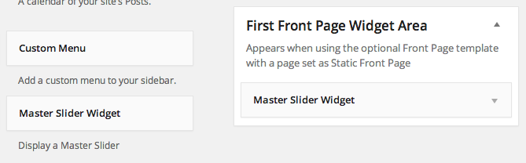
Calling the slider from your theme files
Because a slider can be an integral part of your site, you may want to place it into your theme files. There are some PHP function which you can call for example from the header.php file of your theme and it inserts your slider into your home page or certail other pages. Here they are :
Description
Displays MasterSlider based on the slider id passed to.
Usage :
<?php masterslider ( $slider_id ); ?>
OR
<?php echo get_masterslider ( $slider_id ); ?>
Parameters :
- $slider_id
- (int) The slider ID that can be found on the plugin page in the slider list view at the first table column.
- Default: Null
It is important when you want to insert a slider to check its ID on the MasterSlider WP slider list page. When you removes some sliders, their IDs won't be re-indexed and the sequence may broke up. This is important to keep persistent your sliders preventing unwanted changes on the already inserted ones.
Using Slider API and Callbacks
Here you can add or remove callback functions to the slider, first select one type of callback function from the dropdown menu and clicking on to add it to slider. Each callback function is kind of event handler you can add your custom script in the function then slider will execute that when the event dispatches.
Also you can access to the slider api by using "api" variable.
Methods
var api = event.target;
api.index(); // returns current slide index.
api.count(); // returns total number of slides.
api.next(); // next slide.
api.previous(); // previous slide.
api.gotoSlide(4); // moves to 4th slide.
api.pause(); // pauses the slider timer.
api.resume(); // resumes the slider timer.
api.currentTime(); // returns the percentage of elapsed time.
api.destroy(); // removes the slider.
Properties
api.so // returns the object of slider options.
api.view // returns the slider transition object.
api.view.slideList // returns a array of all slides.
api.viwe.currentSlide // returns the current slide object.
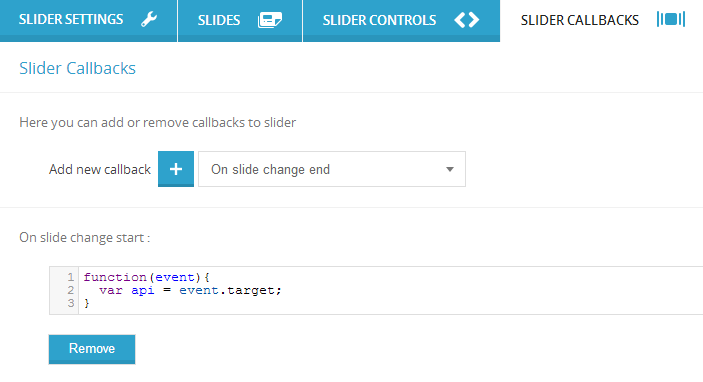
Exporting Sliders:
- Navigate to MasterSlider admin page and click on
Import & Export button.
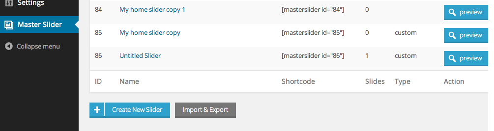
- Now a popup window will be open as shown in screenshot.
- You can select specific sliders to export or select them all in one step and finally press export button.
- Your browser will download an export file containing your sliders once you hit the "Export" button.
- Keep this file at a secure location.
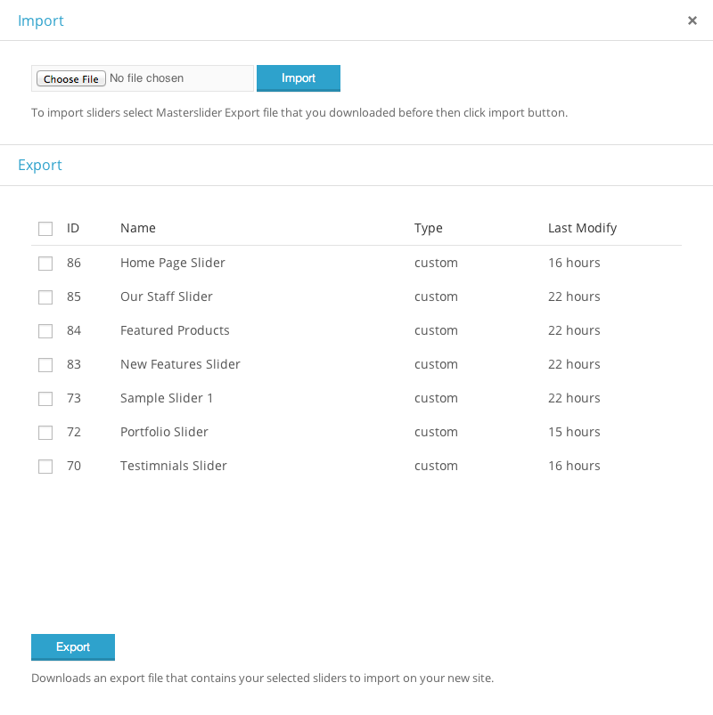
Importing Sliders:
- Use
Choose file button to select the export file you previously downloaded and click the "Import" button. This will bring back your previously exported sliders immediately.
Note MasterSlider won't export the images used in your sliders. Moving sites to different servers should not affect the plugin in any way. However, if you only want to move sliders between sites you need to copy the used images from your /wp-content/uploads/ folder into the same folder on your new installation.
Finding YouTube/Viemo Embed URL
Open the video in YouTube/Vimeo, play video and right-click on it, select Copy embed code then paste the embed code in a text editor
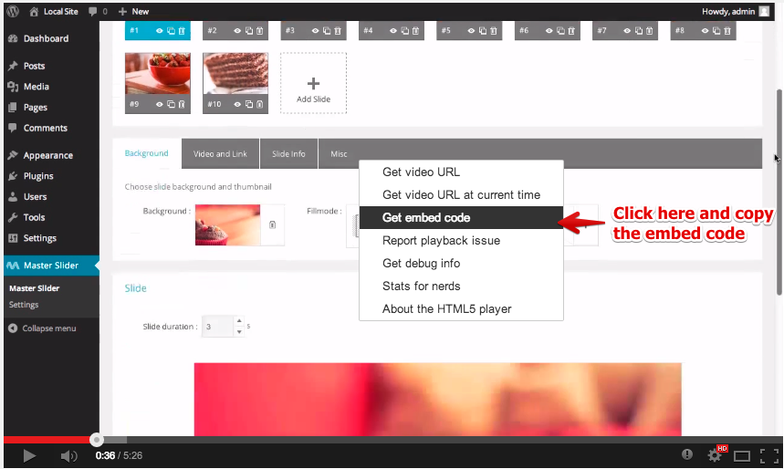
Now you can see video embed URL in embed code which specified as iframe src.

Finally in this example your embed url is : //www.youtube.com/embed/lEdC-oDYTVD
How to translate Master Slider in different languages?
There is two ways of translating Master Slider. Here they are :
1 - Using our online translation service (Recommended way)
You can start translating Master Slider by using our online translation service
2 - Using Poedit app
-
Download Poedit
There are several apps available to help you with translating .PO files. PoEdit is a popular one, and it's available on every major platform. You can download it from here.
-
Start translating
Open the default masterslider.po file from your /wp-content/plugins/masterslider/languages/ folder. When you save your work PoEdit will generate you a .MO file which will be needed to apply your work.
-
Name your files properly
WordPress recognizes your localization by a special formatting of file names. You will need to include the right language and country codes so it can identify what language is your work made for.
For example, a French localization would have the file names: masterslider-fr_FR.po and masterslider-fr_FR.mo. You must follow this syntax, including the dash, underscore, and lower- or uppercase letters.
-
Apply your localization
Copy your newly created .PO and .MO files into the /wp-content/plugins/masterslider/languages/ folder. WordPress should use them immediately if you named your files properly.
Also checkout More detailed article on translating WordPress plugins
I want to rate Master Slider
Please login to your CodeCanyon account and navigate to your Downloads page and rate item as shown below.
Thanks in advance!
Support
If you have any questions please follow these steps:
Why support forum?
- You can upload images and insert code with code-highlighting.
- It is organized and searchable (that makes support easier and faster)
Supporting our Items INCLUDES:
- Responding to questions or problems regarding our item and its features
- Fixing bugs and reported issues
- Providing updates to ensure compatibility with new software versions
Item support does NOT include:
- Customization and installation services
- Support for third party software and plug-ins
Important Note We CAN NOT provide support via email.
Please ask your support related questions only in our support forum.
Important Note For the fast troubleshooting, please send us detailed informations about the issue and make sure that you don't forget to send us your site url where you are using or want to use the item. Please note, that we cannot troubleshoot from screencast videos or screenshots.
Master Slider developer documentation
There is another version of Master Slider documentation specially for developers which you can find Developer Documentation here.
Slider Skins
Here you can find a list of available skins which included in dowload package.
You can change the slider skin by following these steps:
- Find and upload your preferred skin from "skins" folder.
-
Import "style.css" from the skin folder into your page like following:
<link rel="stylesheet" href="masterslider/skins/light-2/style.css" />
-
Specify skin class name to your slider element.
<!-- masterslider -->
<div class="master-slider ms-skin-light-2" id="masterslider">
<!-- slides goes here -->
</div>
<!-- end of masterslider -->
Skins:
| |
Name |
Class Name |
 |
default |
ms-skin-default |
 |
Light 2 |
ms-skin-light-2 |
| 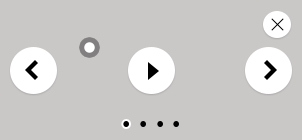 |
Light 3 |
ms-skin-light-3 |
 |
Light 4 |
ms-skin-light-4 |
 |
Light 5 |
ms-skin-light-5 |
 |
Light 6 |
ms-skin-light-6 |
 |
Light 6 Round |
ms-skin-light-6 ms-skin-round |
 |
Contrast |
ms-skin-contrast |
 |
Black 1 |
ms-skin-black-1 |
 |
Black 2 |
ms-skin-black-2 |
| 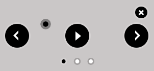 |
Black 2 Round |
ms-skin-black-2 ms-skin-round |
 |
Metro |
ms-skin-metro |


{kind=link}